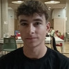
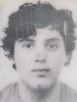
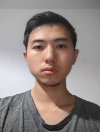

Integrantes
Ethan Carrillo de Albornoz Díaz
Email: ethancar@ucm.es
Sobre mí: Soy un entusiasta de la tecnología y el café. En mi tiempo libre disfruto programando pequeños videojuegos y descubriendo nuevas rutas de ciclismo.
Álvar Rodríguez Gutiérrez

Email: alvarr17@ucm.es
Sobre mí: Me apasiona la ciberseguridad y el baloncesto. Siempre estoy buscando nuevos retos lógicos y me encanta pasar los fines de semana en la montaña con amigos.
Yago Vaquero Rodríguez

Email: yvaquero@ucm.es
Sobre mí: Interesado en el desarrollo front-end y la producción musical. Dedico parte de mi tiempo libre a tocar la guitarra y aprender sobre diseño de interfaces de usuario.
Zhirun Huang

Email: zhihuang@ucm.es
Sobre mí: Apasionado por la inteligencia artificial y la gastronomía. Me gusta experimentar con nuevas recetas en la cocina tanto como probar nuevos lenguajes de programación.